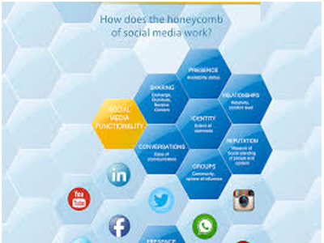
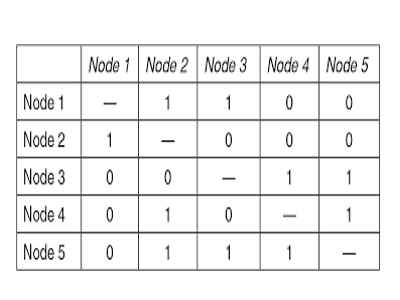
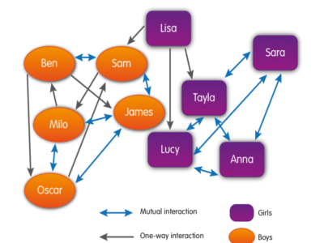

Social Media

| Online Identity | |
|
starsSocial Media Profile starsOnline Reputation starsDigital Footprint starsInternet Identity, Internet Persona |
question_answer
A Digital footprint is elaborated when digital media is accessed, whether that is
social media, or online shopping or other transactions.
Individuals build an
,
,
All of these tools contribute to an individual's online reputation, which is an open evaluation based on online prescence in fora,communities and social media platforms. |
| Geo Tools | |
|
stars
Geolocation stars GPS Trilateration, Cell Tower Triangulation, Hotspot Triangulation, IP Address Lookup stars Geotagging, Geocoding, |
question_answer
Geolocation refers to odentifying the location of a computing device (and it's owner) by means of scientific data collection mechanisms: Geotagging is the process of adding geographical identification metadata to media such as photographs, video, messages, websites. Geocoding is another geolocation assitive process in which physical addresses are converted into geographic coordinates. |
| Displaying Social Media Connections | |
|
starsSociograms,
Binary Adjacency Matrix stars Social Media Honeycomb |
question_answer
Diagramming social connections is done with graphs, specifically and . A reveals the characteristics of social media. |
| Intellectual Property | |
|
stars
Patent, Trademark stars Copyright, Attribution, Share Alike, No Derivatives, Public Domain, Non-Commercial stars Creative Commons, Creative Commons Licenses stars Creative Commons |
question_answer
Intellectual property is defined as a work or invention that is the result of creativity, such as a manuscript or a design, to which the creator has ownership rights and protection, and for which the creator may apply for a , and protection, and the use of a . The organization enables the sharing of work for the better good, by defining Create Commons Licenses for use when information about a creation or invention is released. Works are used in education and news reporting without the author's permission, under the principle. |
|
I think there should be regulations on social media to the degree
that it negatively affects the public good. Elon Musk |
question_answer
Use of social media creates a digital persona that can never be erased. Use of material distributed on the internet is subject to copyright laws. |
| Social Media Platforms | stars Why is it important to be aware of what you do online? |
Every content community you use or add to, every site you visit, every tweet ... these are all recorded and build up your online persona. |
| Freely Available Content | |
| stars Why should you care about downloaded content? | Other individuals create work and upload to the internet. This does not mean that you can copy and reuse this material, as it is likely protected vt some form of copyright law. If you use the material without observing the type of licence, you could be prosecuted. |
Z-Wave is a wireless protocol harnessing low-energy radio waves to help smart devices or appliances communicate successfully with one another.
A patent is a type of intellectual property that gives its owner the legal right to exclude others from making, using, or selling an invention for a limited period of years, in exchange for publishing an enabling public disclosure of the invention.
A trademark is a type of intellectual property consisting of a recognizable sign, design, or expression which identifies products or services of a particular source from those of others, although trademarks used to identify services are usually called service marks.
Excerpts of copyright material may be quoted for purposes such as criticism, news reporting, teaching, and research, without the need for permission from or payment to the copyright holder.
Copyright is a type of intellectual property that gives its owner the exclusive right to make copies of a creative work, usually for a limited time. The creative work may be in a literary, artistic, educational, or musical form - including digital renditions.
There are 6 different license types defined by Creative Commons,
Creative Commons is an American non-profit organization and international network devoted to educational access and expanding the range of creative works available for others to build upon legally and to share.
WPA is a security protocol designed to create secure wireless (Wi-Fi) networks. It is similar to the WEP protocol, but offers improvements in the way it handles security keys and the way users are authorized. For an encrypted data transfer to work, both systems on the beginning and end of a data transfer must use the same encryption/decryption key. While WEP provides each authorized system with the same key, WPA uses the temporal key integrity protocol (TKIP), which dynamically changes the key that the systems use. This prevents intruders from creating their own encryption key to match the one used by the secure network.
Wired Equivalent Privacy (WEP) is a security protocol, specified in the IEEE Wireless Fidelity (Wi-Fi) standard, 802.11b, that is designed to provide a wireless local area network (WLAN) with a level of security and privacy comparable to what is usually expected of a wired LAN.
IEEE (Institute of Electrical and Electronics Engineers) is a professional organizations that develops standards in engineering technology.
Wi-Fi is a wireless network technology defined by IEEE 802.11 standards.
A Wi-Fi device transmits data as radio waves, using either a mesh topology (devices broadcast directly to each other) or a star topology (using a wireless access point).
Wi-Fi signals can reach up to 300 feet, but obstacles like a thick steel or cement wall will cause problems.
Different speeds depend on the classification of Wi-Fi.
Some Wi-Fi speeds are faster then 10BaseT Ethernet.
IEEE (Institute of Electrical and Electronics Engineers) is a professional organizations that develops standards in engineering technology.
Ethernet technology is a wired network technology defined by IEEE 802.3 standards.
Standards for ethernet cabling define the speed of data transmission.
A MAC (Media Access Control) address, identifies devices attached to a LAN. MAC addresses are assigned by the manufacturer.
A MAC address, Wi-Fi address or physical address, works with an IP address on a LAN. DHCP assigns an IP address to a device and links that to the devices MAC address.
NICs, Network Access Controllers, are built into the curcuitry of computers, routers and most other digital devices. They are also available as an add-on, like a USB device.
Local Area Networks, LANs, connect computers typically within a home or office.
LANs include DCEs like modems and/or routers, and cabling or wireless capacity, or both.
Microsoft Windows OS includes a tool for setting up a LAN called a HomeGroup, at home or in a small business.
A Wi-Fi Hotspot is a network with a wireless access point, typically operated by a small business, like a restaurant. Signals are broadcast to about 150 feet.
At the back end, data may be transmitted through DSL or fiber optics.
Speeds can vary, and depend on the number of people using the hotspot.
Wi-Fi Hotspots are not secure, data is transmitted without being encrypted - be careful when using these hotspots to connect to the internet.
Mobile Broadband is continually evolving, the most recent is 5G and Snapdragon-5G. It provides essential service to thise without lad lines, or other devices.
Mobile Broadband connects to a mobile network and sends data through 3G+ services.
Mobile broadband can come in the form of
Speeds vary, upload speeds may reach 5 Mbps and download speeds. 12 Mbps.
Satellite Internet Service broadcasts data to a satellite in space, which is then broadcast again to a land-based ISP.
Fiber To Your Home, FTTH, runs on Fiber Optic cabling and is only available in certain areas built to integrate with fiber optic cabling. Fiber optic cabling is high capacity and can support higher transmission speeds, in excess of 1,000 Mbps.
Digital Subscriber Line internet access technology operates at high speeds. A DSL modem converts signals to high frequency data signals. Voice and data signals are transferred over telephone lines, and then switched to either regular telephone lines, or the internet.
Speeds vary from 768 Kbps to higher than 5 Mbps.
There are variations,
Integrated Services Digital Network technology splits the phone line into a channel for voice and a channel for data. The data channel uses packet switching. Data rates are typically around 128Kbps.
CATV originally stood for Community Antenna TV. A satellite dish would catch TV signals and relay these signals over a system of cables, to subscriber homes.
The topology of the relay infrastructure suits a digital network, for internet data.
Now, when a company offers cable TV service and also internet service, a home network becomes part of a neighborhood network linked by the company digital media, land lines and wireless.
The bandwidth is divided to accomodate uploads, downloads and TV signals.

This is a socialmedia analytics tool that uses honeycombs to depict the characteristics of social media.

This is a socialmedia tool arranged as a table, showing 2 directional connections.

Sociograms depict the interconnections between people, with nodes and edges,

UDP (User Datagram Protocol) is an alternative to TCP. UDP also is responsible for 'chunking' data into packets and sending the packets out on the lines of the internet. UDP is faster than TCP, but UDP does not support any error checking!.
TCP (Transmission Control Protocol) is responsible for 'chunking' data into packets and sending the packets out on the lines of the internet. If all the packets are received, they are assembled in order. Otherwise, TCP requests a retransmission of any lost or corrupted packets in a process of error checking.
A protocol called TCP is responsible for splitting data up into chunks called packets. TCP send packets to the destination, perhaps using different routes. The packets are reassembled at the destination, using a sequence number to keep them in the correct order.
The packets belonging to the original data may travel along different routes to get to the destination. When they arrive at the destination, they are reassembled in sequence with the sequence number.
The older alternative to packet switching is circuit switching - this involves a dedicated line. Think of the old telephone network.
Using three distances, trilateration can pinpoint a precise location. Each satellite is at the center of a sphere and where they all intersect is the position of the GPS receiver. As the position of the GPS receiver moves, the radius of each circle (distance) will also change.
Online identity is also known as Internet Identity, Internet Persona. This is the social identity that an internet user builds up in online groups like communities, and fora.

Connects multiple nodes to each other, as a full mesh network or as a partial mesh network
People add to their online profile by sharing social characteristics that identify them on social media sites such as Twitter, Instagram, LinkedIn and Facebook, and also when using tools such as digg and Delicious, collaboration applications such as Jive, IBM Connections.

Connects one node to another
MacOS includes a tool called AirDrop for making a point to point connection between two devices running MacOS.
Also known as Wi-Fi positioning, this category of geolocation uses nearby Wi-Fi hotspots and other wireless access points to discover where a device is located. It is useful when satellite navigation such as GPS is not functional. Such systems include assisted GPS, urban positioning services through hotspot databases, and indoor positioning systems. Wi-Fi positioning takes advantage of the rapid growth in the early 21st century of wireless access points in urban areas
An IP address lookup determines the location of any IP address. The results provide quite a bit of information, including information the city, state/region, postal/zip code, country name, ISP, and time zone. Consequently, this data is used by various agencies to find the owner of an IPv4 or IPv6 address. You can experiment on https://www.whatismyip.com/ip-address-lookup/.
Multiple cell phone towers are used to track a phone's location by measuring the time delay that a signal takes to return back to the towers from the phone. This delay is then calculated into distance and gives an estimation of the location of the phone.